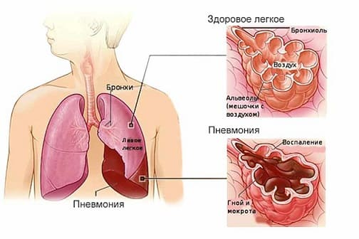
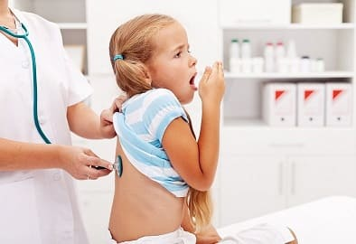
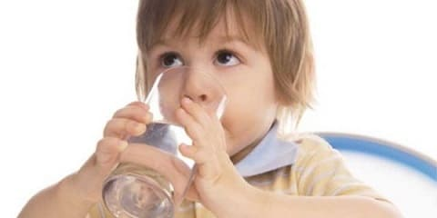
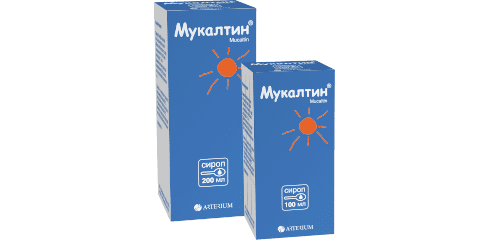
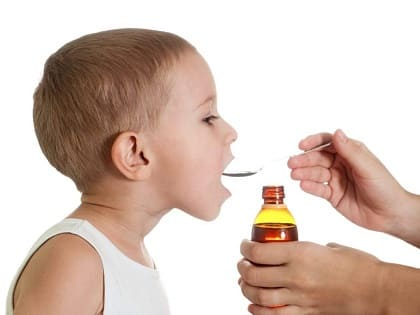
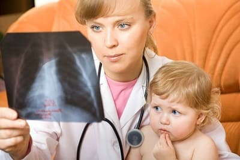

Словосочетание «воспаление легких» придумано врачами специально для «неврачей». Болезнь, о которой пойдет речь в этой главе, медики именуют пневмонией. Автору не раз приходилось слышать примерно такие рассказы: «У нашего Пети дважды было воспаление легких и один раз – пневмония». Т. е. в немедицинской среде нет однозначной уверенности в том, что воспаление легких и пневмония это одно и то же. Пишу об этом сознательно, и не в осуждение, прекрасно понимая, что основы медицинских знаний людям в школах не преподаются.
Воспаление легких – одна из наиболее распространенных человеческих болезней. Для некоторых, особенно в детском возрасте, это просто наказание какое-то, для других – редкость; третьи, таких, к сожалению, немного, сами воспалением легких не болели. Но переболевших родственников и знакомых имеют в достаточном количестве все!
Система дыхания вообще и легкие в частности весьма уязвимы для инфекционных болезней. При всем разнообразии способов заражения воздушно-капельный путь передачи встречается наиболее часто. Неудивительно, что передовым отрядом борьбы с множеством вирусов и бактерий являются верхние дыхательные пути. При определенных условиях: слабость иммунитета, высокая активность микроба, нарушения качественного состава вдыхаемого воздуха и т. п. – инфекционный процесс не локализуется лишь в верхних дыхательных путях (носоглотке, гортани, трахее), а распространяется вниз. Иногда процесс заканчивается воспалением слизистой оболочки бронхов – бронхитом, но довольно часто этим дело не ограничивается. Происходит воспаление непосредственно легочной ткани – это и есть пневмония.
Описанный путь возникновения пневмонии – наиболее частый, но не единственный. Еще в школе все мы получили ответ на вопрос о том, для чего легкие нужны человеку в принципе. Ответ конкретный и однозначный – чтоб дышать. Отличники даже могут сообщить, что в легких происходит газообмен – в кровь поступает кислород, а из крови удаляется углекислый газ. Все, в общем-то, правильно, но, оказывается, помимо дыхания, легкие выполняют множество других, весьма разнообразных функций.
Легкие регулируют обмен жидкости и солей в организме (например, увлажняют вдыхаемый воздух).
Легкие защищают организм от проникновения огромного количества «нехороших» веществ, в достаточном количестве присутствующих во вдыхаемом воздухе.
Легкие регулируют температуру тела (обогрев воздуха, во-первых, «сброс» лишнего тепла учащением дыхания, во-вторых).
В легких синтезируются и разрушаются некоторые белки и жиры, а вырабатывая эти вещества, легкие регулируют, например, систему свертывания крови.

При любом воспалительном процесс в организме, при любой операции, при любом переломе костей, при любом ожоге, при любом пищевом отравлении в кровь выбрасывается или в крови образуется огромное количество вредных веществ – токсинов, тромбов, продуктов распада поврежденных тканей. Все эти частицы легкие улавливают, некоторые из них нейтрализуют (растворяют), другие удаляют посредством кашля. Упрощенно говоря, легкие – это как бы своеобразная губка, через которую постоянно происходит фильтрация крови.
С фильтрами в технике и быту мы все встречаемся постоянно. Меняем фильтры в автомобилях, включаем их на кухне, пьем фильтрованную воду. Фильтры эпизодически засоряются, их выбрасывают или промывают. С главнейшим нашим биологическим фильтром – с легкими – посложнее. Промыть трудно, заменить нельзя.
Неудивительно, что повышение нагрузки на легочный фильтр (упомянутые нами болезни, травмы, операции) не всегда заканчивается благополучно. И чем тяжелее любая болезнь, чем опаснее травма, чем обширнее ожог, чем сложнее операция – тем больше вероятность того, что легочный фильтр не выдержит, определенный участок фильтра «засорится» и в нем начнется воспалительный процесс.
С учетом всего вышеописанного становится легко объяснимой частота, с которой возникает воспаление легких после травм и операций. Поэтому, если Иван Иванович поломал ногу, а через три дня у него началось воспаление легких, если у девочки Наташи сильный понос, а на второй день обнаружили пневмонию – то это не в больнице простудили (вариант – заразили). Это, к сожалению, совсем не редкий и вполне естественный путь развития событий.
Практически любой микроорганизм может стать причиной возникновения пневмонии. Какой конкретно – зависит от целого ряда факторов. От возраста больного, от того места, где воспаление легких началось – дома или в больнице, если в больнице, то в каком отделении – в хирургии одни микробы, в терапии другие, в реанимации третьи. Огромную роль играет состояния здоровья организма в целом и состояние иммунитета в частности.
В то же время воспаление легких довольно редко бывает первичным, т. е. жил да был здоровый мальчик Вася, вдруг – раз – и заболел пневмонией. Воспаление легких, как правило, вторично и представляет собой осложнение другого заболевания.

Все эти «другие заболевания» можно с уверенностью разделить на две группы – острые респираторные вирусные инфекции (ОРВИ) и все остальное. При этом воспаление легких как осложнение обычной ОРВИ (насморка, фарингита, ларингита, бронхита) встречается намного чаще, чем пневмония при всех других инфекциях, травмах и операциях. Это вовсе не удивительно и объясняется не какой-то особой «страшностью» респираторных вирусных инфекций, а их широчайшей распространенностью – «подцепить» ОРВИ среднему человеку 1–2 раза в год удается наверняка, а все остальное встречается от случая к случаю.
Исключительно важно подчеркнуть следующее: вне зависимости от тяжести ОРВИ или другой инфекции, вне зависимости от объема и сложности операции (ожога, травмы и т. п.) и конкретный взрослый человек, и конкретные мамы-папы имеют реальные возможности для того, чтобы значительно уменьшить риск возникновения воспаления легких у себя любимого и у своих детей. Медики тоже многое могут. Короче говоря, на вопрос «что делать?» ответы есть. Главное – это, во-первых, ответы выслушать (вариант – прочитать), во-вторых, понять и в-третьих, реализовать на практике.
Дальнейшие разъяснения могут показаться читателю чересчур умными. Но очень все-таки хотелось бы добиться понимания! Отсюда настоятельная просьба прочитать, а при непонимании – перечитать! Актуальность знаний исключительно велика: автор видел по меньшей мере пять тысяч воспалений легких у детей и в 90 % случаев своим заболеванием дети были целиком и полностью обязаны родителям, которые прекрасно знают, как делать ребенка, но понятия не имеют о том, чего надо и чего не надо делать с ребенком!
Для начала обратим внимание на очень важный физиологический механизм, присущий нормальному функционированию легких. Слизистая оболочка бронхов постоянно выделяет слизь, которая называется мокротой. Значение мокроты исключительно велико. В ней содержатся вещества, поддерживающие эластичность легочной ткани. Мокрота обволакивает пылевые частицы, попадающие в легкие. Высокая концентрация в мокроте противомикробных веществ (иммуноглобулинов, лизоцима) – один из главнейших способов борьбы с возбудителями инфекций, попадающих в дыхательные пути.
Как и любой другой жидкости, мокроте присущи определенные физико-химические характеристики – плотность, вязкость, текучесть и т. п. Совокупность всех этих параметров реализуется в таком понятии, как реология мокроты, – т. е. мокрота с нормальной реологией выполняет описанные выше функции, а с ненормальной реологией, разумеется, не выполняет. Кабы просто не выполняла – так это полбеды! Другая половина беды следующая: потеря мокротой своих нормальных свойств приводит к тому, что густая слизь нарушает вентиляцию легких (закупориваются, перекрываются бронхи), в плохо вентилируемых участках нарушается кровообращение, оседают микробы, и, как вполне логичное следствие, начинается воспалительный процесс – та самая пневмония.
Таким образом, основная причина пневмонии – нарушение реологии мокроты, а важность самого понятия «мокрота» становится очевидной. На повестку дня выступает потребность в четком знании факторов, влияющих на свойства мокроты.
Образование мокроты напрямую связано с циркуляцией крови в легочной ткани (т. е. с реологией самой крови: реология крови = реология мокроты). Ведущий фактор, способствующий нарушению реологии крови, – повышенная потеря организмом жидкости. Причины: перегрев, потливость, понос, рвота, недостаточное поступление воды, высокая температура тела.
Интенсивность образования и качество мокроты во многом определяются составом вдыхаемого воздуха. Чем воздух суше, чем больше в нем пылевых частиц или химических агентов (факторов бытовой химии, например), тем хуже.
Образующаяся мокрота все время удаляется, а удаление это происходит двумя путями. Первый путь общеизвестный – это кашель. Второй же состоит в следующем: внутренняя поверхность бронхов выстлана клетками, которые, в свою очередь, имеют особые выросты – реснички. Реснички все время шевелятся, проталкивая мокроту снизу вверх – к трахее и гортани, а уже там кашель свое дело сделает. Кстати, все факторы, непосредственно влияющие на реологию мокроты, в не меньшей степени влияют и на работу реснитчатого эпителия (так на умном медицинском языке именуют внутреннюю поверхность бронхов).
Полученные нами знания о том, что такое мокрота и для чего она нужна, позволяют сделать два очень важных вывода:
1 без нормальной мокроты невозможно нормальное выполнение легкими своих функций;
2 вышеупомянутая нормальная мокрота должна вовремя удаляться из легких.
Кашель – а именно кашель удаляет мокроту – бывает разным, и это каждый испытывал на себе. Кашель может быть сухим, болезненным, но может быть и влажным, когда после эпизода кашля человек испытывает облегчение, поскольку отходит мокрота и становится заметно легче. Такой кашель – влажный, с отхождением мокроты – медики называют продуктивным.
В отношении кашля заметим, что частота пневмоний после оперативных вмешательств, особенно на органах брюшной полости и грудной клетке, во многом объясняется не только нагрузкой на легочный фильтр, но и тем, что человеку очень больно кашлять, мокрота скапливается в легких и пневмония не заставляет себя ждать.
Итак, важнейшие пути профилактики пневмонии – поддержание адекватной реологии мокроты и кашель.
Теперь рассмотрим «классическую» ситуацию – типичную ОРВИ. Симптомы – насморк, кашель, повышение температуры тела. Воспалительный процесс в верхних дыхательных путях сопровождается повышенной выработкой мокроты.
Главные наши задачи – не дать мокроте потерять свои нормальные свойства и иметь продуктивный кашель.
Как этого добиться?
Основное правило: чистый прохладный влажный воздух в помещении, где находится больной. Оптимальная температура около 18 ºС, влажность – не ниже 50 %. Любые источники пыли в комнате увеличивают вероятность высыхания слизи, поскольку при обилии ковров и мягкой мебели увлажнить воздух довольно сложно, а без этих самых пылевых источников вполне достаточно 1–2 раза в день делать влажную уборку. При проведении влажной уборки ни в коем случае не добавлять в воду хлорамин, хлорную известь и другие дезинфицирующие хлорсодержащие препараты. Запах хлора вполне способен вызвать поражение дыхательных путей у абсолютно здорового человека (химический ожог).
Исключительно опасны любые обогреватели, поскольку высушивают воздух. Еще раз подчеркну: оптимально 18 ºС, но лучше 15 ºС, чем 20 ºС.
Помимо сухого и теплого воздуха высыханию мокроты способствует высокая температура тела. С высокой температурой бороться можно, но чем активнее ее «сбивать», тем меньше вырабатывается в организме интерферона, нейтрализующего вирусы. Что же делать? Стараться как можно больше пить – помните о связи реологии крови и реологии мокроты. Много пьем, значит, «разжижаем» кровь, значит, облегчаем удаление жидкой мокроты.
Если в комнате жарко и душно (живем в общежитии, пять человек в одной комнате) или на улице лето, а больной пить отказывается (ребенок не хочет, взрослый не понимает), высокая температура тела становится исключительно опасной – однозначно следует использовать жаропонижающие средства.
Теперь о кашле. В принципе, продуктивный кашель вторичен – т. е. если имеется достаточное количество жидкой (не засохшей) мокроты, то и кашель, разумеется, будет продуктивным. Но это в принципе. Люди очень любят разнообразные лекарства «от кашля» и очень часто активно «помогают» сами себе кашлять перестать. Это, в свою очередь, способствует накоплению мокроты и развитию воспаления легких.

Следует четко понимать, что как кашель бывает разным, так и лекарства от кашля бывают разными. Многие препараты якобы «от кашля» на самом деле кашель не прекращают, а делают его продуктивным – это очень важно и очень нужно. Составные компоненты таких лекарств воздействуют либо на эпителий бронхов, способствуя образованию мокроты и улучшая работу ресничек эпителия, либо непосредственно на саму мокроту – разжижая ее. Названия этих лекарств хорошо известны. Получают их в основном из растений (типичные представители – мукалтин, бронхикум), а вариантов таблеток, сиропов и микстур – тысячи. Имеется также небольшое количество (не более 10) весьма эффективных химических веществ (нерастительного происхождения), обладающих влиянием на мокроту, например, бромгексин, амброксол, ацетилцистеин, карбоцистеин.

Упомянутые лекарства называют «отхаркивающими средствами» и их использование при ОРВИ заметно уменьшает вероятность воспаления легких, но (!) при обязательном выполнении двух предварительных условий – обильное питье и чистый прохладный воздух (один хороший обогреватель легко победит 1 кг бромгексина).
Очень важный момент применительно к тактике использования отхаркивающих средств. Все эффективные препараты не только разжижают слизь, но и стимулируют кашель. Если жидкости не хватает, препарат не может проявить свой разжижающий эффект, но кашель он усиливает (учащает). Поэтому если вы дали ребенку на ночь тот же амброксол, а напоить дитя и проветрить комнату забыли – бессонная ночь с частым и совершенно неэффективным кашлем вам почти гарантирована.
В то же время помимо отхаркивающих средств существует достаточно большая группа препаратов, способствующих исчезновению или ослаблению кашля. Действуют они по-разному, влияют, к примеру, непосредственно на кашлевой центр в головном мозге, уменьшая его активность. Их используют в ситуациях, когда кашель, по большому счету, организму не нужен, он, в силу особенностей самой болезни, не приносит облегчения, а лишь причиняет страдания больному. Какие это болезни? Например, коклюш или хронический бронхит. Какие это препараты? Например, бронхолитин, глауцин, стоптуссин, синекод, пакселадин. Используя эти лекарства при ОРВИ и уменьшая таким образом кашлевую активность, очень легко добиться скопления мокроты в легких и самых разнообразных осложнений – прежде всего все той же пневмонии.

Потеря мокротой своих свойств не является единственной причиной пневмонии. Ведь не мокрота сама по себе вызывает воспалительный процесс в легочной ткани. Необходимо еще и присутствие конкретного микроба (стрептококка, пневмококка, стафилококка и т. д.). Эти микробы у большинства людей (неважно, взрослый это или ребенок) мирно обитают в носоглотке, а их размножение сдерживается факторами местного и общего иммунитета. Любая ОРВИ приводит к активизации бактерий, а если этот фактор сочетается с потерей мокротой своих защитных свойств, то подобная ситуация является вполне достаточной для возникновения осложнений.
Информация о том, что ОРВИ сопровождается активизацией бактерий, приводит к очень неправильным действиям – к назначению антибактериальных препаратов, прежде всего антибиотиков или сульфаниламидов (называется это профилактическая антибиотикотерапия). На вирусы эти препараты вообще не действуют, но ведь бактерии-то активизируются! Вот и чешутся руки эти самые бактерии задавить. Но задавить все не получается!
Среди десятка бактерий всегда найдутся такие, на которые проглоченный антибиотик не действует. Они и вызовут воспаление легких, и это будет не просто пневмония, а пневмония, вызванная микробом, устойчивым к антибиотикам.
Но главное даже не в этом. Бактерии, населяющие носоглотку, образуют некое сообщество, члены которого мирно сосуществуют друг с другом и сдерживают размножение друг друга. Принимая при вирусных инфекциях антибиотики, мы способствуем тому, что одни члены микробного сообщества погибают, а другие, лишившись своих естественных соперников, начинают размножаться. Вот и получается, что профилактическая антибиотикотерапия при ОРВИ в 9 раз увеличивает вероятность возникновения пневмонии!
Вы уже поняли, как «организовать» собственному ребенку воспаление легких?
Положите его в теплой сухой комнате, поближе к ковру, помойте пол с хлоркой и включите обогреватель. Если скажет, что пить не хочет, – не приставайте. Дайте бронхолитин, чтоб поменьше кашлял, и очень хорошо ампициллин! Этот антибиотик на стафилококк не действует, так что есть шанс заработать не просто пневмонию, а стафилококковую пневмонию! Да, чуть не забыл! Если увидите сопли – побыстрее закапайте нафтизин, чтоб вирус в носу долго не задерживался, а сразу в легкие попадал.
Полученная информация позволяет нам, во-первых, определиться в главных направлениях профилактики, а во-вторых, понять, что некоторые действия способствуют развитию пневмонии в большей степени, чем абсолютное бездействие.
В то же время самые правильные и самые решительные профилактические мероприятия иногда не помогают и воспаление легких все-таки возникает – снижение иммунитета, неудовлетворительные социально-бытовые факторы, особая активность возбудителя инфекции.
Отсюда следует знать некоторые признаки, позволяющие заподозрить развитие воспаления легких:
1 Кашель стал главным симптомом болезни.
2 Ухудшение после улучшения или любая «простудная болезнь», длящаяся более 7 дней.
3 Невозможно глубоко вдохнуть – такая попытка приводит к приступу кашля.
4 Выраженная бледность кожи на фоне других симптомов ОРВИ (температура, насморк, кашель).
5 Одышка при невысокой температуре тела.
6 При высокой температуре совсем не помогает парацетамол (панадол, эффералган, тайленол).
Подчеркну, что знание этих признаков необходимо не для того, чтобы вы ставили себе диагноз, а для того, чтобы не тянули с обращением за медицинской помощью.
У врача имеются достаточно совершенные методы выявления пневмонии. Помимо прослушивания и выстукивания, в сомнительных случаях используют клинический анализ крови и рентгенологическое обследование – это почти всегда позволяет расставить все точки над i.
Выбор места лечения – дом или больница – определяется целым рядом факторов, начиная от возраста пациента и заканчивая квалификацией врача и его желанием бегать к вам домой каждый день (притом, что зарплата от этого не изменится). Весьма существенный и наиболее принципиальный момент – реальная тяжесть самой пневмонии. Осложненные формы заболевания, протекающие с дыхательной или сердечной недостаточностью, с обструктивным синдромом (обструкция – это как раз и есть закупорка бронхов густой мокротой), с плевритом – лечатся исключительно в больнице. Неосложненную пневмонию вполне можно лечить дома.
Как лечат пневмонию?
Все, что было важно на этапе профилактики, становится еще более важным при развитии пневмонии.
Без использования фармакологических средств не обойтись, а главным, и это однозначно, становится выбор антибиотика, его дозы и способа попадания в организм. Касательно способа, следует отметить, что введение антибиотика посредством «втыкания» игл в ягодицы вовсе не является абсолютно обязательным – не менее 80 % всех пневмоний благополучно излечиваются при помощи таблеток и сиропов.
Помимо антибиотиков используют препараты, расширяющие бронхи, например, эуфиллин, противовоспалительные средства, витамины, ну и, разумеется, комплекс отхаркивающих средств. Как только состояние начинает улучшаться, по крайней мере, сразу же после нормализации температуры тела, активно используют разнообразные физиопроцедуры и массаж. Эти мероприятия заметно ускоряют процесс выздоровления. Иногда необходимо повторное рентгенологическое обследование – дабы убедиться, что все окончательно «рассосалось».

Ни одного конкретного антибиотика я принципиально называть не буду, чтобы не возникало у широких народных масс нездорового желания лечить пневмонии самостоятельно. Да и вообще, честно говоря, рассказывать о лечении пневмонии дело не только неблагодарное, но и рискованное.
Главное для нас как раз не в лечении – пусть об этом доктора думают. Уже сам тот факт, что вы или ваш ребенок перенесли воспаление легких, является основанием для серьезных размышлений.
О чем?
О нехватке свежего воздуха, о воскресенье перед телевизором, о пачке сигарет в день, о приданом в виде двух ковров, с коими нет никаких сил расстаться, о лечении всем, что попадается под руку, о лени человеческой, в конце концов… Обидно только, что размышления эти приходят в головы наших соотечественников либо после серьезной болезни, либо не приходят вообще. Вдвойне обидна перевернутая система ценностей, когда дети систематически расплачиваются за отсутствие у родителей знаний о том, «что такое хорошо и что такое плохо?» Крошке сыну просто некуда идти…
Е.О.Комаровский. "Здоровье ребенка"